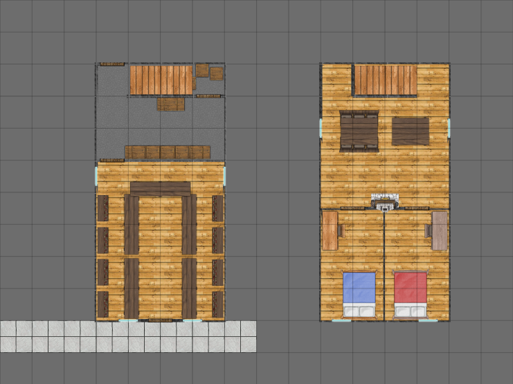

The Library Bookstore¶
See The Rod is Lost.
The building has 2 to 4 professional guards hanging around at all times. When things are quiet there are the two who live upstairs. If there’s been trouble, two more come over to support them.
The librarian travels widely to manage the collection. Carefully recruited from the Temple of Cyþan, this woman is a mage, and tries to operate the library as a kind of mini-temple. She is close with Squire Angler. She carries a slender flail and is deadly with it.

The Library Bookstore¶
Floor 1 (left) and Floor 2 (right)
Scale: 1 square = 2m (6’)
She’s worried about disclosing her relationship with Squire Angler. Uncovering this requires interrogation skills, difficulty Moderate 15.
It’s a difficulty Difficult 16 to get on her good side. Using Charisma or charm skill works wonders. With some success at interrogation, and some time, she will explain what little she knows.
While she’s rumored to be part of the Jackal Cult, this is false. She trades books with their representatives. She actually knows very little.
She’s been in the dark for several weeks now. The silence has been ominous. She concludes the Jackal is up to something because he’s not trading books.
It helps to tip the Librarian some information about what’s going on. She can’t believe Squire Starter is capable of picking a fight with anyone; for most of his life he’s been useless. She’s aware of the precarious political situation. If the party don’t get this back, there will be war.
She does know a bit about people making a pilgrimage to the Jackal Temple. They’re very tight-lipped about the route, so she is forced to trust them to carry messages for her about books back and forth.
She exchanges her letters with the one-legged man at the Fox’s Tail. She’d like to storm down to the Fox’s Tail and beat him until he explains what’s going on. But that seems unhelpful.
GM Note
The barkeeper at the Fox’s Tail can’t read, and thinks she’s a spy for the Jackal cult. He assumes the way she openly brings him letters means the letters actually use hidden inks and secret codes.
Librarian: Agility 4D, fighting 1D, melee combat +2, Coordination 4D, Physique 3D+2, Intellect 3D+2, Acumen 3D+2, Charisma 3D+2, intimidation 3D+1, Extranormal 2D. Advantages: Contacts (R2), Squire Angler, Disadvantages: Devotion (R2), Squire Angler, Move: 10, Strength Damage: 2D, Fate Points: 1, Character Points: 5, Body Points: 20.
Library Guards: Agility 4D, fighting 1D, melee combat +2, Coordination 4D, Physique 3D+2, Intellect 3D+2, Acumen 3D+2, Charisma 3D+2, intimidation 3D+1. Move: 10, Strength Damage: 2D, Fate Points: 1, Character Points: 5, Body Points: 24.